Research Apps
A research app lets iOS users participate in research studies from the convenience of their iOS devices. The predesigned screens and transitions available in Apple’s open source ResearchKit project make it easy to create a beautiful research app that’s customized for your study and enjoyable for people to use. To learn how to use ResearchKit to develop a research app for your study, see researchkit.org.
Typically, a research app groups customized ResearchKit screens and app-specific screens into sections that fit into three primary experiences:
Follow the guidelines for the sections that comprise each of these experiences so that you can design a research app that helps participants feel comfortable and stay engaged.
Onboarding
The onboarding experience consists of a series of sections that introduce the study to potential participants and allow you to get their consent. Participants don’t typically revisit the onboarding sections after completing them. The onboarding experience includes the following sections:
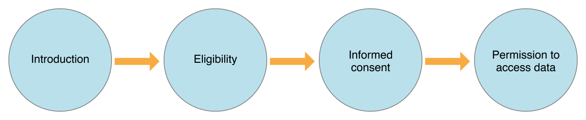
You should present the sections in the onboarding experience in the order shown here—that is, introduction, eligibility, consent, and (if appropriate) permission to access data.
Create an introduction that informs and provides a call to action. The introduction section should help people learn more about your study and tell them how to become a participant. It’s best when the introduction section also gives existing participants a quick way to log in and continue an in-progress study.
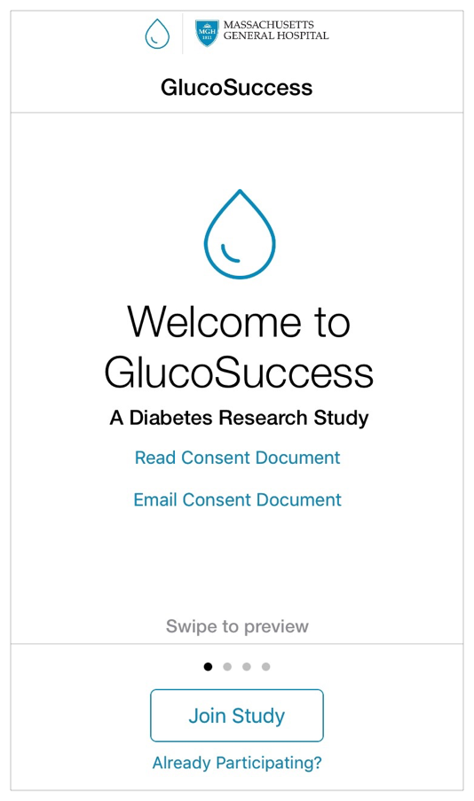
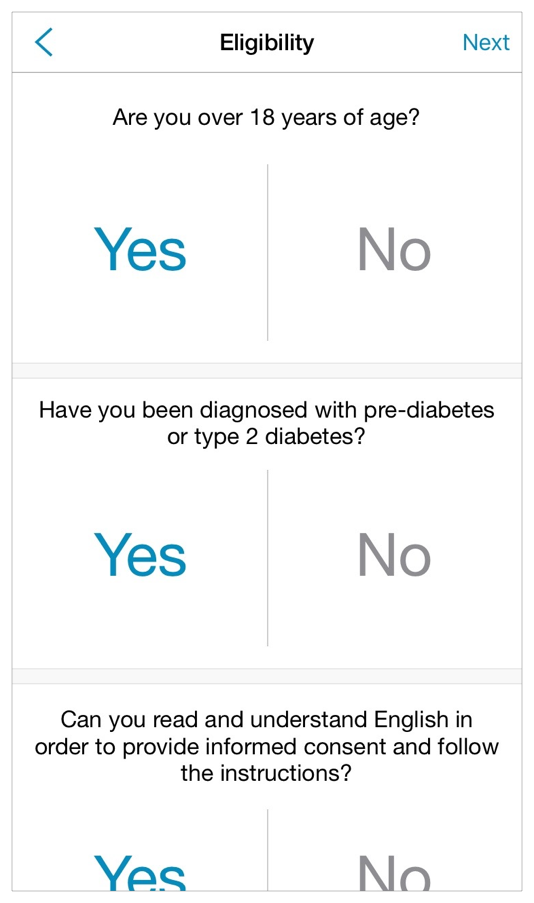
Determine eligibility as soon as possible. Present the eligibility section after the introduction and before the consent section (participants don’t need to view the consent section if they’re not eligible for the study). Be sure to present only the eligibility requirements that are necessary for your study. Use simple, straightforward language to describe the requirements and make it easy for people to enter information.
Make sure participants understand your study before you get their consent. ResearchKit helps you make the consent process concise and friendly, while still allowing you to incorporate into the consent any legal requirements or requirements set by an institutional review board or ethics review board. (If your app involves conducting human subjects research, you must make sure that your app complies with the applicable App Store Guidelines, including the consent requirements.) Typically, the consent section:
Explains how the study works
Ensures that participants understand the study and their responsibilities
Gets the participant’s consent
Break a long consent document into easily digestible subsections. Each subsection can cover one aspect of the study, such as data gathering, data use, potential benefits, possible risks, time commitment, how to withdraw, and so on. For each subsection, use simple, straightforward language to provide a high-level overview. If necessary, provide a more detailed explanation of the subsection that participants can read by tapping a Learn More button. Participants should be able to view the full consent content before they agree to participate.
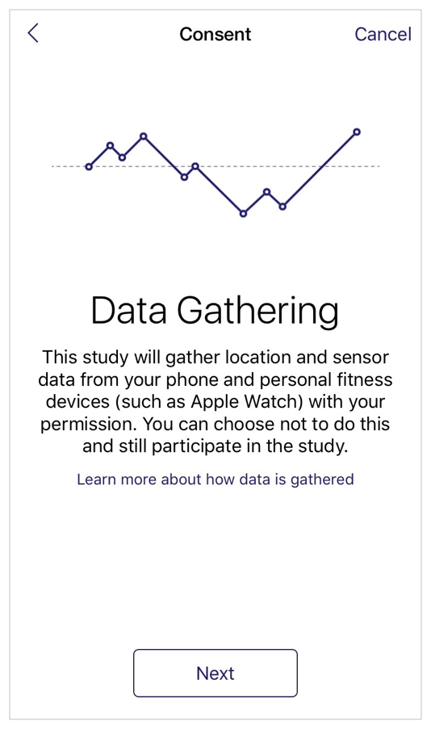
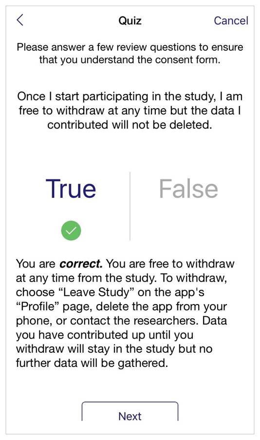
If it makes sense, provide a quiz that tests the participant’s understanding. You might choose to do this if you would be asking the participant to answer the same questions if you obtained the participant’s consent in person.
Get the participant’s consent and, if appropriate, some contact information. After agreeing to join the study, participants receive a confirmation dialog, which should be followed by screens in which they provide their signature and contact details. Most research apps email participants a PDF version of the consent form for their records.
Participants respond to an alert to confirm their intent to join a study
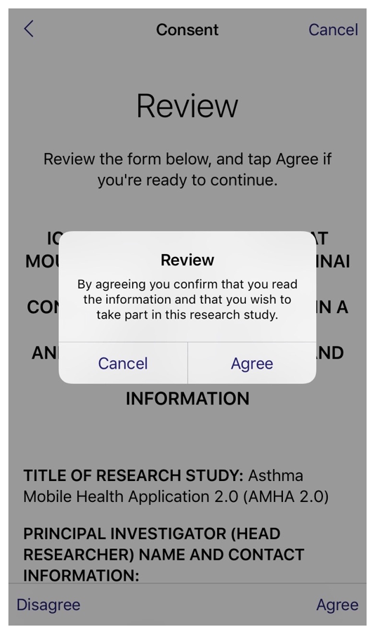
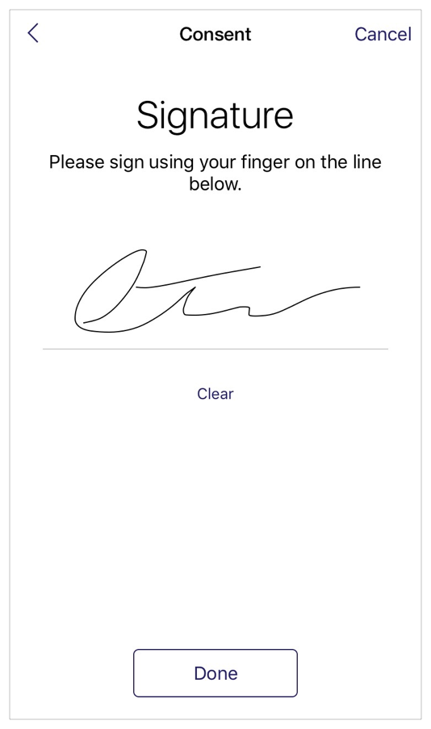
Get permission if you need to access the participant’s device or data. Clearly explain why your research app needs access to location, Health app, or other data and be sure to avoid asking for access to data that isn’t critical for your study. Also ask for permission to send notifications to the participant’s device, if your app requires it.
Prepare participants to grant access to data, such as Health app data
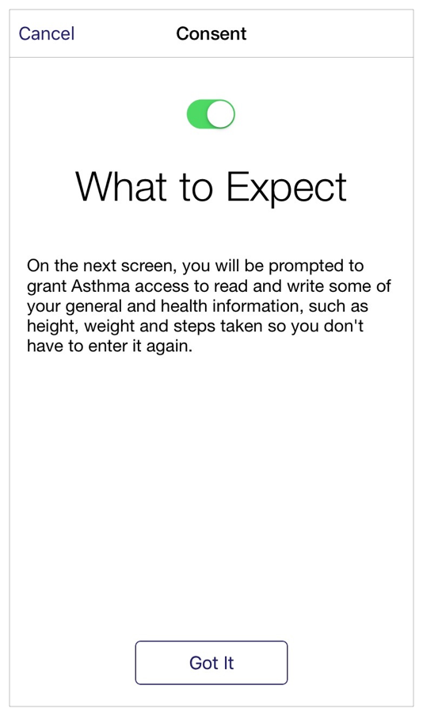
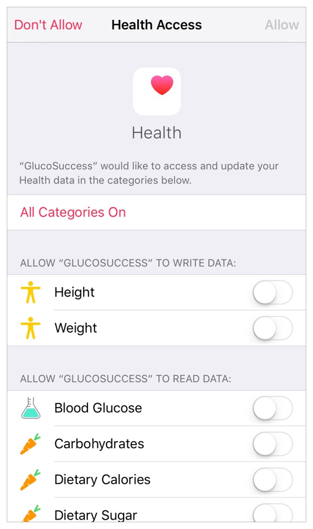
Study-Specific Investigation
To get input from participants, your study might use surveys, active tasks, or a combination of both. Depending on the architecture of your study, participants may interact with each section multiple times or only once.
Create surveys that keep participants focused and engaged. ResearchKit makes it easy to present survey questions that require different types of answers, such as true or false, multiple choice, dates and times, sliding scales, and open ended text entry. As you use ResearchKit screens to create a survey, follow these guidelines to provide a great user experience:
Tell participants how many questions there are and about how long it will take to complete the survey.
Use one screen per question.
Show participants their progress in the survey.
Keep the survey as short as possible. Several short surveys tend to work better than one long survey.
For questions that require some additional explanation, use the standard font for the question and a slightly smaller font for the explanatory text.
Tell participants when the survey is complete.
ResearchKit provides many customizable screens you can use in your surveys. Here are a few examples of survey screens.
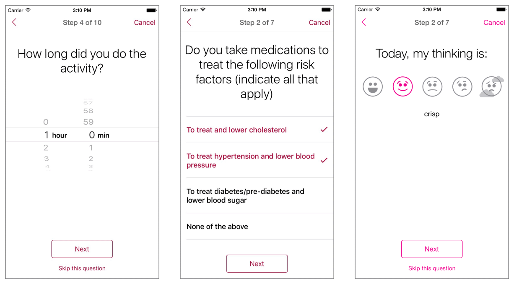
Make active tasks easy to understand. An active task requires participants to engage in an activity, such as speaking into the microphone, tapping their fingers on the screen, walking, or performing a memory test. Follow these guidelines to encourage participants to perform an active task and give them the best chance of success:
Describe how to perform the task using clear, simple language that everyone can understand.
Mention if the task must be performed at a particular time or under specific circumstances.
Make sure that participants can tell when the task is complete.
Here are two examples of active tasks that ResearchKit supports.
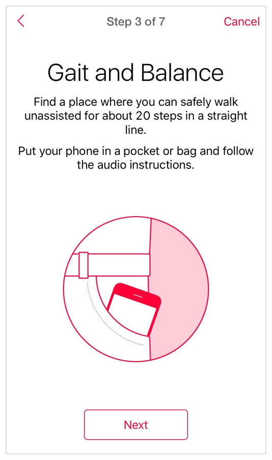
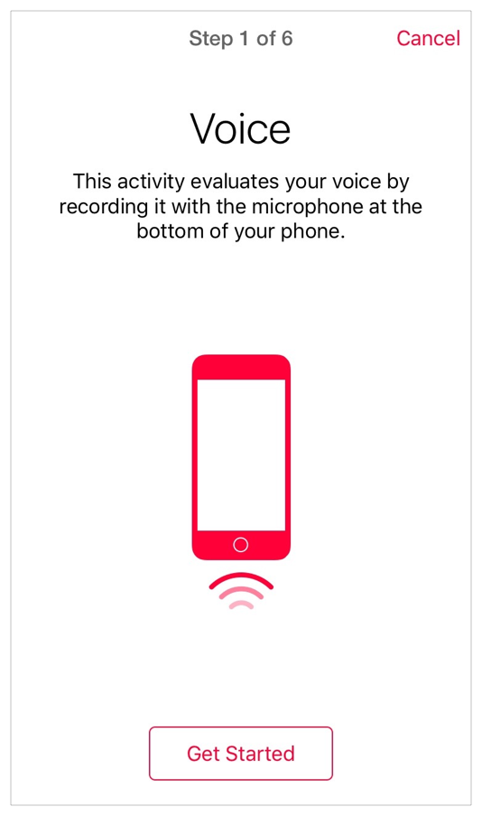
Management Items
ResearchKit provides a profile screen that gives users a way to manage their personal information while they’re in your research app. In addition, it’s a good idea to create a screen that motivates users and gives them a way to track their progress in the study. For the most part, participants should be able to access both of these areas at any time.
Use a profile to help participants manage personal data that relates to your study. A profile screen can let participants edit data that can change during the course of the study—such as weight or sleep habits—and remind them of upcoming activities. You can also use a profile to give participants an easy way to leave the study and to view the consent document and the app’s privacy policy.
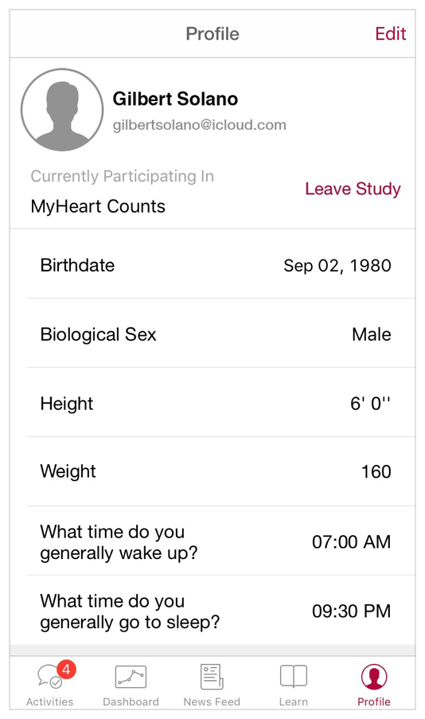
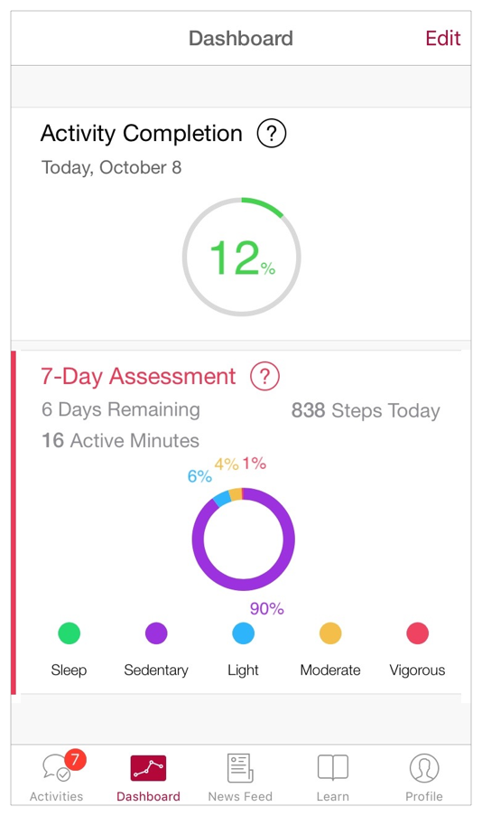
Use a dashboard to motivate participants and show progress. A dashboard screen can let you “be in the room” with the participant and encourage them to continue. If appropriate for your study, you can use a dashboard to give participants a rich set of feedback, such as daily progress, weekly assessments, results from specific activities, and even results that compare the participant’s results with aggregated results from others in the study.
Copyright © 2016 Apple Inc. All rights reserved. Terms of Use | Privacy Policy | Updated: 2016-03-21